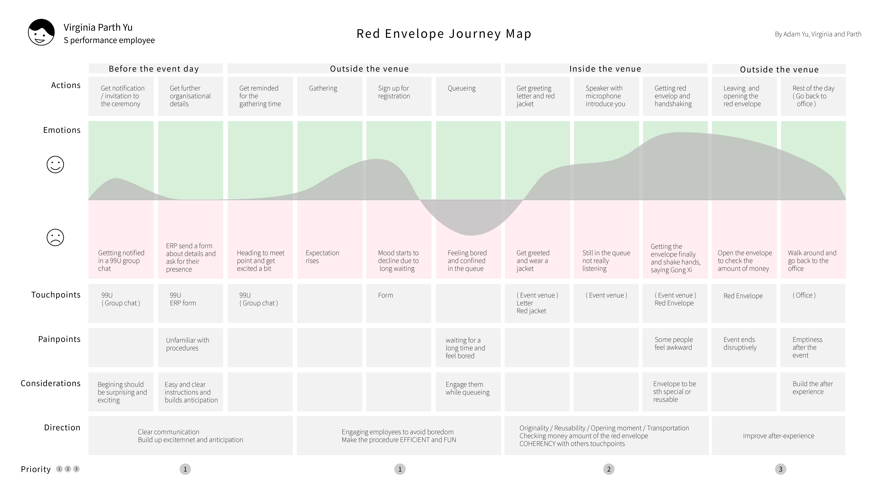
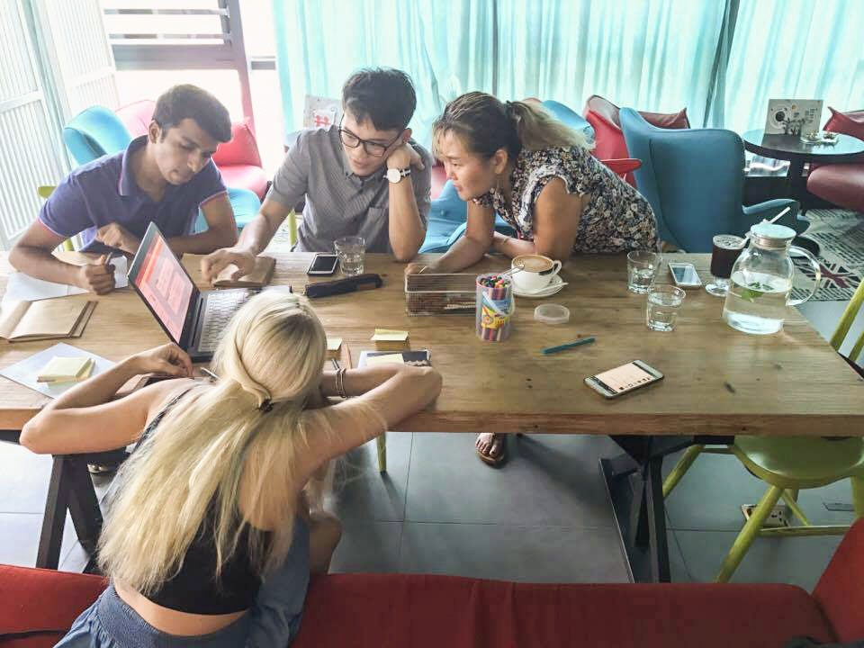
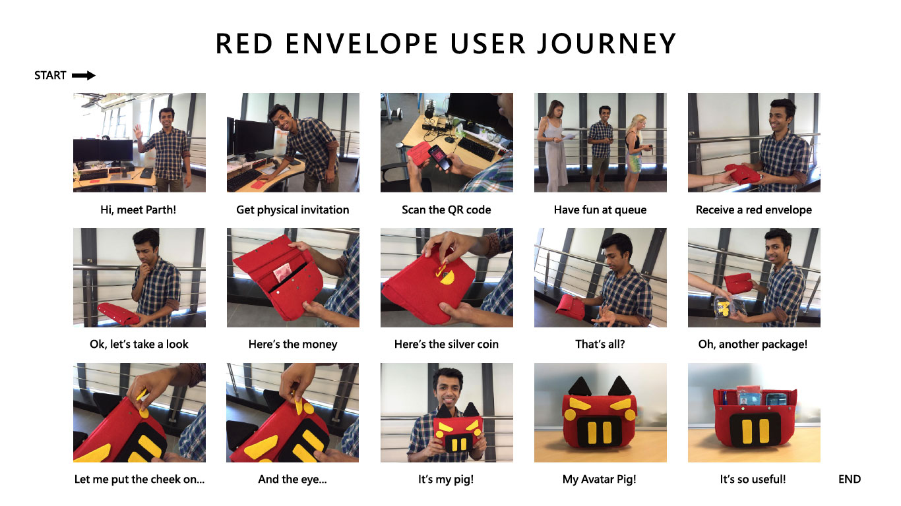
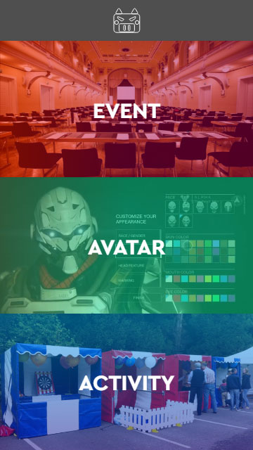
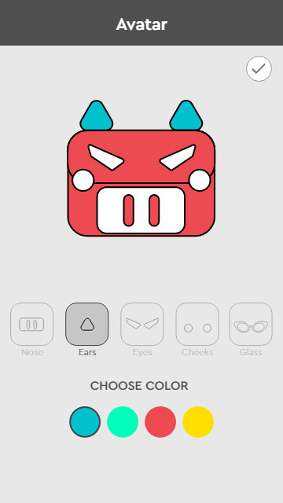
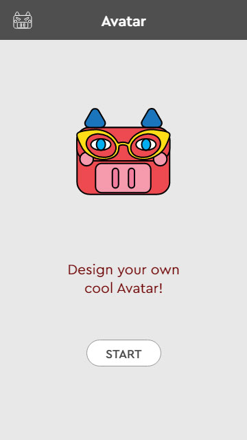
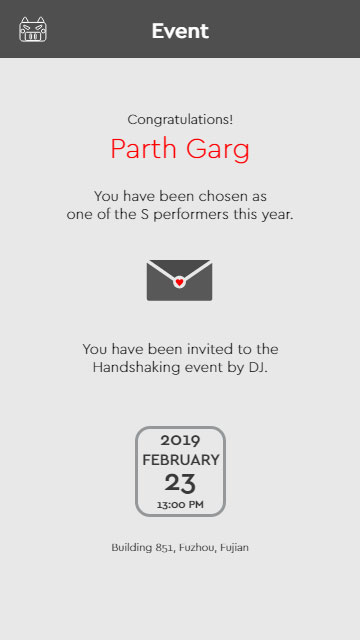

ND Handshaking event
Product and event service design
Introduction
ND, which stands for NetDragon, is a company that I interned in 2017 summer in Fuzhou, China. During the summer internship, one of the projects is to design a red envelope for 2019. It will be delivered to outperforming employees in a handshaking event where CEO and other high managers would shake hands with them to express their gratitude. Beyond designing a red envelope, our mission also includes improving the event experience. The team consists of three people.
Design Process
Interviews

Customer Journey Map
Design Direction
Brainstorming
Solution
Interviews
In order to fully understand the event itself and participants’ overall experience. We interviewed three past participants, including one new employee, one S performance employee and one event organizer.
Customer Journey Map
Basing on the interview feedback, we synthesized the data and came up with a customer journey map to show users experience with their emotion fluctuation as well as their painpoints and touchpoints through the process. In this map, we discovered two major low moments in the experience:
1. Unclear communication prior to the event makes participants feel confused about the event procedure
2. Long queuing time that makes users feel bored before they entered the event venue
Aside from the two low moments, what’s interesting is that we also found that there was a sense of emptiness after the event due to an abrupt end of the event that kind of stops the high emotion in the experience.
Design Directions
In this map, we also discussed about the touchpoints through the experience that includes not only physical materials but also electronic media. And because of the purpose of this project is to design a red envelope, we kept reminding ourselves that the red envelope should be our most important touchpoint.
So basing on that and our findings in the customer journey map, we set our design direction as using red envelop as a medium to connect each part of the experience and to
- build up anticipation for the event
- solve boredom while queuing and
- create post-experience after the event
Brainstorming
With our design direction, we started the brainstorming session. During the session, we came up with several keywords as a starting point. These keywords are ‘functionality’, ‘reusability’, ‘customization’, ‘no low moment’, ‘anticipation’, ‘surprise’ and ‘engagement’.
And finally, we came up with our solution – Avatar Pig.
Solution
So our solution starts from sending out a physical invitation with a QR code to the outperforming employees. The QR code inside links to a special section of the company’s app for event details. Through physical invitation, it gives participants sense of surprise, compared to solely using an online notification. Besides, the QR code helps participants understand event details more easily and quickly.
On the event day, a new section in the QR code page would be unlocked, where participants can play an avatar pig game. In this game, participants can customize their avatar pig with various combinations of parts and colors. And it solves the boredom while queueing.
During the event, participants would receive the envelope that looks like a bag with strange metal applications, which would confuse them for a while. However, as soon as they step out the event venue, they would receive another package that contains different parts of the pig. When they put all the pieces together, it becomes the pig they’ve just customized right before the event. And it brings more surprises to participants and extends the experience after the event itself.
And before long, participants would also discover that actually the envelope is made up with several small pockets with good functionalities. It can be a useful item even after the festival.
   